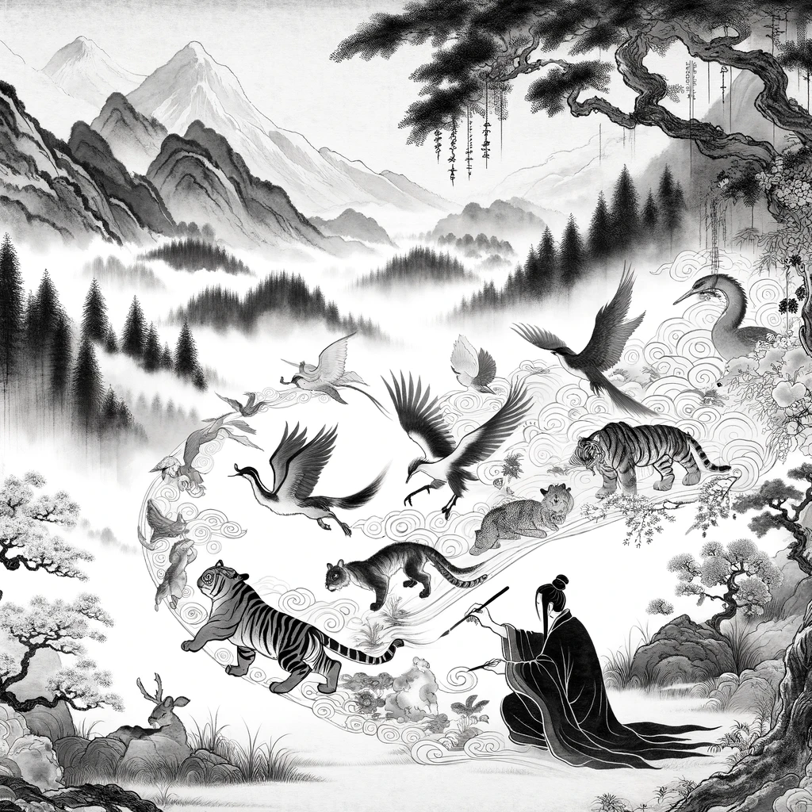

<ion-header [translucent]="true">
  <ion-toolbar>
    <ion-buttons slot="start">
      <ion-back-button default-href="/home"></ion-back-button>
    </ion-buttons>
  </ion-toolbar>
</ion-header>

<ion-content [fullscreen]="true">

  <div class="centered-container">

    <ion-title size="large" class="fadeIn fadeIn0">create a story</ion-title>
    
    <div class="card fadeIn fadeIn1" (click)="goToPage('create-write')" >
      <p>write</p>
      
    </div>
  
    <div class="card fadeIn fadeIn2" (click)="goToPage('create-paint')" >
      <p>paint</p>
      
    </div>
  </div>

</ion-content>